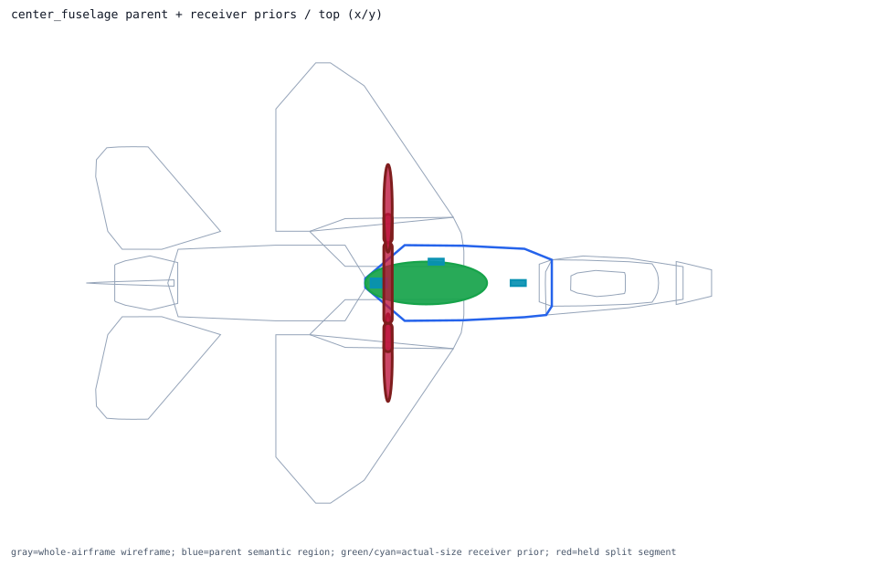
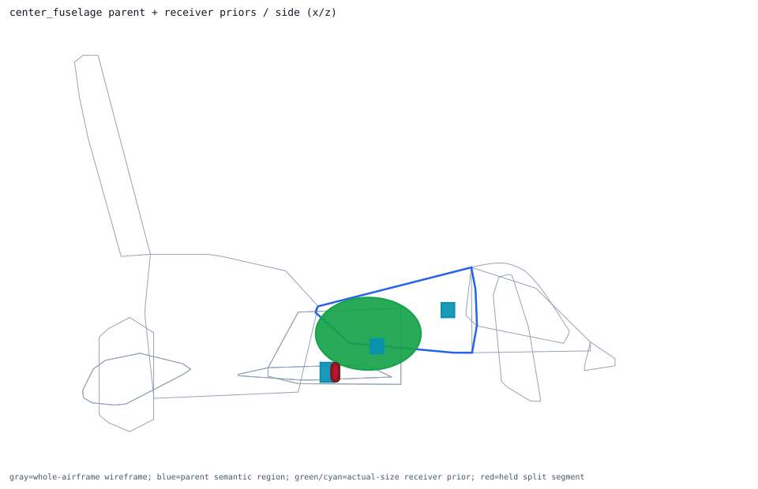
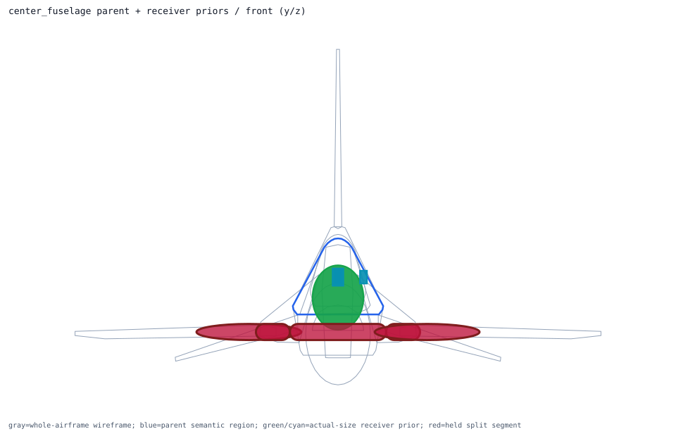

Back to parent-child layout index
semantic_center_fuselage_skin_volume
obb parent -> center_fuselage; receiver overlays 5; extra slots 4
Trace Details
- parent semantic component: semantic_center_fuselage_skin_volume
- parent surface component: surface_center_fuselage_skin
- outer model region: center_fuselage
- volume role: center_fuselage_skin_volume
- geometry primitive: obb
- primary receiver: center_fuselage_fuel_cell
- extra receivers: mission_computer, data_link_terminal, flight_control_computer, wing_spar_center
- cross-region held receivers: wing_spar_center
- external held split segments: none
- parent handoff: direct_receivers_parse_ready_cross_region_receivers_held
- layout policy: one_parent_semantic_shell_view_with_receiver_priors_overlaid
- runtime projection: review_only_visual_layout_not_runtime_activation
- child overlays:
- primary_receiver_overlay: center_fuselage_fuel_cell ellipsoid dims=[2.6, 0.9, 0.72]m evidence=public_total_capacity_partition_estimate segments=0 -> placed_inside_airframe_exceeds_parent_shell_review
- extra_receiver_overlay: mission_computer obb dims=[0.320548, 0.123952, 0.14351]m evidence=standard_enclosure_proxy_pending_f16_mmc_dimensions segments=0 -> already_inside_whole_airframe
- extra_receiver_overlay: data_link_terminal obb dims=[0.3429, 0.1905, 0.19304]m evidence=public_lru_dimension segments=0 -> placed_inside_airframe_exceeds_parent_shell_review
- extra_receiver_overlay: flight_control_computer obb dims=[0.320548, 0.123952, 0.14351]m evidence=standard_enclosure_proxy_pending_f16_flcc_dimensions segments=0 -> already_inside_whole_airframe
- extra_receiver_overlay: wing_spar_center capsule dims=[0.18, 6.6, 0.18]m evidence=cross_region_structure_proxy_pending_true_spar_dimensions segments=5 -> cross_region_prior_constrained_inside_airframe_held
- external held segment overlays:


